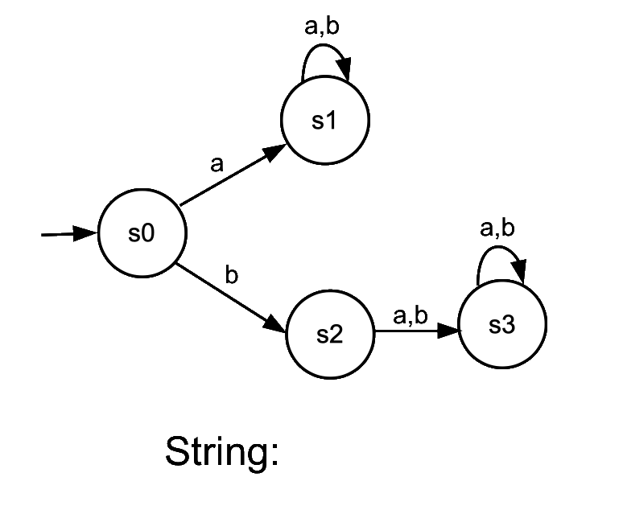
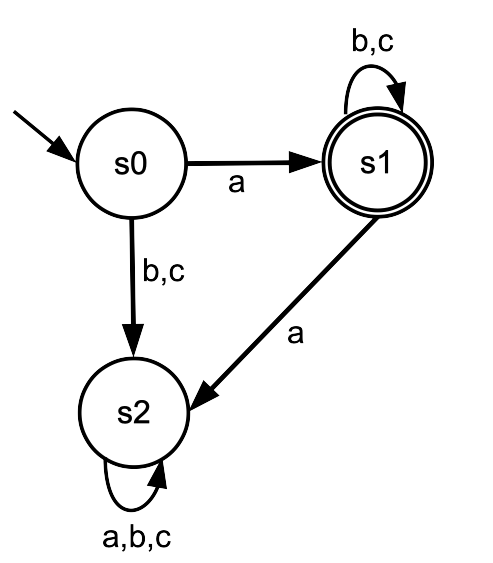
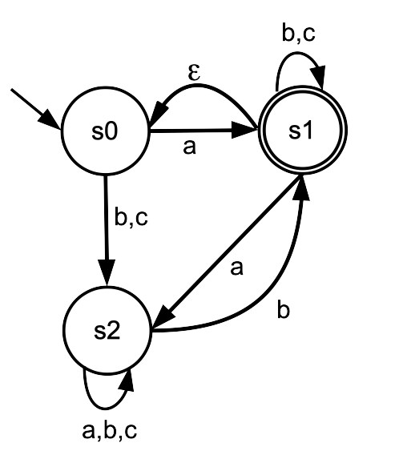
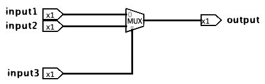
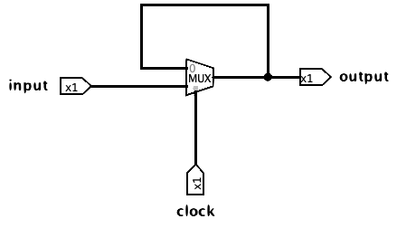
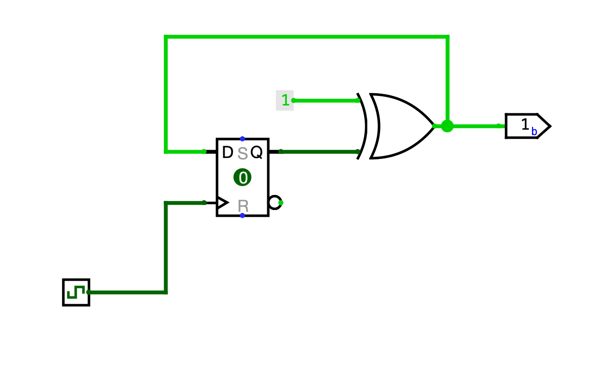

Module 06: Propositional Logic
Regular Expression (Regex)
In formal language theory, an alphabet is a finite set of characters. A string is a finite list of elements formed using elements from this alphabet, and a language is a set of such strings. For example, in English the alphabet includes letters like "a", "b", and "c", and these letters combine to form valid strings such as "cat" or "dog". A string is said to be accepted by a language if it belongs to that language's set of valid strings. So while "dog" is part of the English language, "cachorro" is not.
Although an alphabet must contain at least one character, a string can be empty. This empty string is typically denoted by the Greek letter epsilon (ε), and whether or not it is accepted depends on the rules of the language in question.
A regular expression, or regex, is a compact and powerful way of describing which strings a language accepts. The three foundational operations used in regex, which are sufficient to define any language, include concatenation, repetition, and alternation.
-
Concatenation: characters are placed next to each other to indicate that they must appear in that exact order.
Example: ab
Accepts: "ab"
Rejects: "a" "b" "ba" "abab" "abb"
-
Repetition (star *): indicates that the preceding element can appear zero or more times.
Example: ab*
Accepts: "a" "ab" "abb" "abbb"
Rejects: "b" "ba" "aba" "abab"
-
Alternation (pipe |): indicates a choice, allowing the pattern to match one of several alternatives separated by pipes.
Example: (a|b|ab)
Accepts: "a" "ab" "b"
Rejects: "aba" "ba" "abb" "abab"
Notice that we use round brackets for grouping. Otherwise, * has high precedence and so applies to the immediately preceding element; so, ab* is the same as a(b*) but not (ab)*. Also, | has low precedence and so applies to as much as it can; so, ab|c is the same as (ab)|c and not a(b|c).
Several other regex operations enhance expressiveness.
-
Period .: serves as a wildcard for any single character.
Example: a.b
Accepts: "aab" "abb"
Rejects: "a" "b" "ba" "ab"
-
Plus +: indicates that the preceding character appears at least once, while with the star * it could appear zero times.
Example: ab+
Accepts: "ab" "abb" "abbb"
Rejects: "b" "ba" "aba" "abab" "a"
-
Question Mark ?: indicates that the previous item can appear exactly 0 or 1 times.
Example: a(ab)?b
Accepts: "ab" "aabb"
Rejects: "aba" "ba" "abb" "abab" "a" "b"
-
Square Brackets []: replaces a pipe if all items options have exactly 1 charater.
Example: [abc]
Accepts: "a" "b" "c"
Rejects: "ab" "abc" "bc" "ac"
Be careful: a regex like (ab) means "a" followed by "b" while [ab] means a single character that is either an "a" or a "b".
-
Curly Brackets {}: specifies a range that gives the number of times an item may appear.
Example: ab{1,5}
Accepts: "ab" "abb" "abbb" "abbbb" "abbbbb"
Rejects: "a" "abbbbbb" "abab"
-
Backslash \: allows an item to be a character that is used as a special character in a regex.
Example: a+\+b+
Accepts: "a+b" "aa+b" "a+bb" "aa+bb"
Rejects: "ab" "+" "a+" "b+" "aabb"
To see these ideas in practice, consider the expression a(b|c)*. This pattern accepts strings that start with "a" and are followed by any number (including zero) of "b" or "c" characters. Valid strings include "a", "ab", "ac", "abbc", and "abcbcc" while invalid examples include "b", "aa", "cb", and "abcab", since they do not adhere to the structure defined by the expression.
DFAs and NFAs
Another, more visual, way of describing which strings a language accepts is by using an automaton. An automaton consists of a set of states, and transitions between these states are determined by the characters. As you read each character of a string from left to right, you move between states according to the character being processed. For example, starting from state s0, the string "ab" would end in state s1, while "ba" would end in state s3.

An automaton can be either deterministic (also known as a DFA) or non-deterministic (also known as an NFA).
DFA
A deterministic finite automaton, or DFA, has a single initial state and one or more accepting states, which are typically indicated using a double circle in diagrams. The DFA always begins at the initial state, processes each character in the string in order, and finishes at a final state after the last letter is processed. If this final state is accepting, the string is considered accepted by the language.
In a DFA, each state must have exactly one transition for every character in the alphabet. For example, if the alphabet contains only the characters "a" and "b", then each state must have exactly one outgoing transition labeled "a" and exactly one outgoing transition labeled "b". No transition can exist without a label.
DFAs and regexes are equivalent in power, meaning any pattern that can be described using a regex can also be accepted by a DFA. The following DFA, for example, is equivalent to the regex a(b|c)*, since it accepts the exact same set of strings.

The string 'abcbcc' is accepted since we finish at an accepting state when running it through the DFA:
s0 a→
s1 b→
s1 c→
s1 b→
s1 c→
s1 c→
s1 (and s1 is an accepting state).
The string 'abcab' is not accepted since we do not finish at an accepting state when running it through the DFA:
s0 a→
s1 b→
s1 c→
s1 a→
s2 b→
s2 (and s2 is not an accepting state).
NFA
Unlike DFAs, nondeterministic finite automata (NFAs) can have multiple transitions for the same input symbol from a single state. They also allow transitions that occur without consuming an input symbol, known as epsilon transitions (labeled ε). An NFA accepts a string if at least one sequence of transitions leads to an accepting state, even if other possible sequences do not.

The string 'abcab' is accepted by this NFA since we can finish at an accepting state, although there are other choices that may lead to a non-accepting state:
s0 a→
s1 b→
s1 c→
s1 a→
s2 b→
s1 (and s1 is an accepting state).
The string 'aa' is also accepted by using the empty string arrow:
s0 a→
s1 ε→
s0 a→
s1 (and s1 is an accepting state).
Sequential Circuits
While combinational circuits produce outputs based solely on current inputs, sequential circuits also consider previous outputs. In other words, they incorporate memory of past events, making them time-sensitive systems.
|  |  |
| Combinational circuit | Sequential circuit |
In a sequential circuit, time is a critical factor because the output depends not only on the current inputs but also on past outputs. To distinguish between past and present states, sequential circuits rely on a special input signal called a clock. A clock is a periodic signal that alternates between 0 and 1 at a fixed frequency. Each cycle of the clock defines a new moment in time. When the clock changes, typically on a rising edge (from 0 to 1), the circuit transitions to a new state. The previous output is the state before the clock edge, and the new output is the result after the transition.
While sequential circuits use all the components of combinational circuits (like logic gates), they also include elements unique to their design, such as the flip-flop. A flip-flop is a storage device that updates its output only on the rising edge of the clock signal. It ignores any changes in its input until that moment. When the clock transitions from 0 to 1, the flip-flop captures the current input and updates its output accordingly. It then holds this output constant, regardless of further input changes, until the next clock edge.

If a circuit has many flip-flops connected to the same clock, they all update simultaneously. That means each one updates based only on the old values going into its input and ignoring any updates it or the other flip-flops may perform.
DFAs can be translated into sequential circuits using the following algorithm:
- Each state is going to be represented by a binary number, where one flip-flop will represent each of the bits in the number.
- A state table is created describing the DFA's transitions between states.
- The flip-flops' outputs will be given by the accepted states.
- The flip-flops' inputs will be given by multiplexers choosing between the input, the negation of the input, the constant False, and the constant True.
- A final proposition is created based on the truth table of all flip-flop outputs.
- Everything is connected, finishing the circuit.
This algorithm is detailed with an example in the screencast from Lab 07, called DFA to Circuit.
Read More
Epp, Susanna. Discrete Mathematics with Applications.
5th edition: 12.1 and 12.2
4th edition: 12.1 and 12.2
3rd edition: 12.1 and 12.2